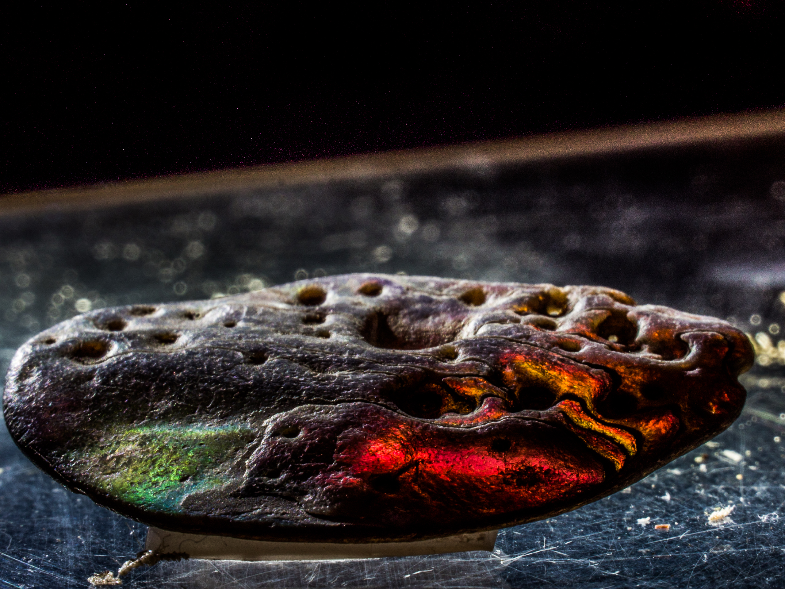

Climate change and ocean acidification have killed off one of the most spectacular features on the
planet.

The Great Barrier Reef of Australia passed away after a long illness. It was 25 million
years
old.
For most of its life, the reef was the world's largest living structure, and the only one
visible from space.
Among its many other achievements, the reef was home to one of the world’s largest
populations
of dugong and the largest breeding ground of green turtles.
The reef was born on the eastern coast of the continent of Australia during the Miocene
epoch.
Its first 24.99 million years were seemingly happy ones, marked by overall growth. It was
formed
by corals, which are tiny anemone-like animals that secrete shell to form colonies of
millions
of individuals. Its complex, sheltered structure came to comprise the most important habitat
in
the ocean. Its otherworldly colors and patterns will be sorely missed.
To say the reef was an extremely active member of its community is an understatement. The
surrounding ecological community wouldn’t have existed without it.
generous spirit was immediately evident 60,000 years ago, when the first humans reached
Australia from Asia during a time of much lower sea levels. Aboriginal clans hunted and
fished
its waters and cays for millennia, and continued to do so right up to its demise.